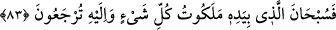
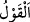
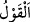
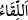

Eğer “Allah Teâlâ’nın irâdesi kadîm ve ezelîdir. Allah’ın sözü (ol emri) kadîm ise
mükevven (ol emri ile var edilen şey) de kadîm olur.” dersen, şöyle cevap veririm:
İradenin muayyen bir vakitte taalluk etmesi hâdistir. Bu vakit ise yaratılan şeyin hariçte
ve zatta (aynda) var olma vaktidir. Dolayısıyla bu durum yaratılan şeyin kadim olmasını
gerektirmez.
Hz. Peygamber (s.a.)’in: “Allah tekdir, tek olanı sever.”[183] hadîsi hakkında
büyüklerden birisinin şöyle dediği nakledilir: Ferdiyet makamı teslîsi/üçlü oluşumu
gerektirir. Bunlar zât, sıfat ve fiildir. Yaratma işi de bunun üzerine binâ edilir. Allah
Teâlâ’nın “Bir şey yaratmak istediği zaman Onun yaptığı “Ol” demekten ibarettir”
kavlinde buna işâret edilmektedir. Dolayısıyla bu husus zât, irâde ve sözden ()
ibârettir. “ kelimesinin i’lalden sonra ters çevrilmiş hâli “ (buluşma,
kavuşma)”dır. Hakikate göre ortada söz yoktur. Bu ancak îcad/var edenin îcad edilen ile
buluşmasından, hüviyyetinin ona sereyânından/sirayetinden, sıfatının ve fiilinin onda
zuhûrundan ibârettir. Bu inceliği anla. Allah Teâlâ’nın “ona ruhumdan üfledim” (el-
Hicr 15/29) kavlinin sırrı bu incelik etrafında döner. Çünkü ortada asla üfleme diye bir
şey yoktur. Bu sadece tasvirden ibarettir.
Hüseyin Nûrî (k.s.) der ki: “İnsanlar kâinâtın değersiz olduğunu tanıyıp bilsinler, ona
meyletmesinler ve onu yaratan ve inşâ edene dönsünler diye aşağılamak ve küçük
düşürmek için kâinâtın hepsini “Ol” sözü ile yarattı. Halk kâinâtın ziynetiyle meşgul
oldu. Allah da onları kâinât ile başbaşa bıraktı. Kâinâtın boyunduruğundan âzâd ettiği
has kullarından bazılarını seçip onları kendisiyle ihyâ etti. İlletlerin (sebep ve
bahanelerin) ve tesirlerin onlara ulaşmasına yol vermedi.
Mânâda mahv/fânî, suretlerden fâriğ oldum, el çektim
Sûretlerin cilvesinden haberim yoktur
Hattâ Hak’tan gayrıdan fâni oldum
Ben hakkânî varlığı buldum
Âlem-i ekvân benden gâib oldu
Gözüm cihânın nuruyla doldu
83. Her şeyin mülkü kendi elinde olan Allah’ın şânı ne kadar yücedir! Siz de
O’na döneceksiniz.
“Her şeyin mülkü kendi elinde olan Allah’ın şânı ne kadar yücedir!”
“Melekût, rahamût, rahebût ve ceberut” kelimeleri mülk, rahmet, rahbet ve cebr
kelimelerine mübalağa için “vav” ve “tâ” harfleri ziyade edilen masdarlardır. el-
Müfredât’ta der ki: “el-Melekût” Allah Teâlâ’nın mülküne özeldir. “ bir şeyi emir